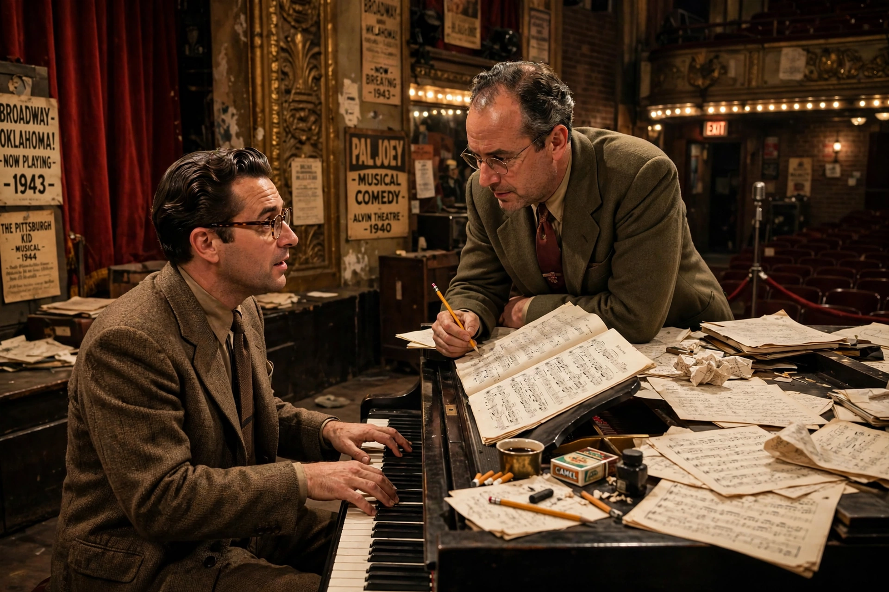

| Rodgers and Hammerstein | |
|---|---|
 | |
| Members | Richard Rodgers (1902–1979), composer Oscar Hammerstein II (1895–1960), librettist/lyricist |
| Years active | 1943–1960 (as a team) |
| Notable works | Oklahoma!, Carousel, South Pacific, The King and I, The Sound of Music |
| Awards | Collectively 42 Tony Awards, 15 Academy Awards, 2 Pulitzer Prizes, multiple Grammys and Emmys |
Rodgers and Hammerstein were an American musical-theatre writing team consisting of composer Richard Rodgers (1902–1979) and lyricist-librettist Oscar Hammerstein II (1895–1960). They created a string of popular Broadway musicals in the 1940s and 1950s that are credited with revolutionizing the form, inaugurating the "golden age" of musical theatre.
Both men had major careers before teaming up: Rodgers with lyricist Lorenz Hart (Babes in Arms, Pal Joey), and Hammerstein as the librettist of Show Boat (1927, with Jerome Kern). When Hart's health declined, Rodgers approached Hammerstein, and their first collaboration, Oklahoma! (1943), integrated song, dance (choreographed by Agnes de Mille), and story so completely that it transformed the book musical. It ran for 2,212 performances.
The team's canonical five are Oklahoma!, Carousel (1945) — Rodgers's personal favorite, with "You'll Never Walk Alone" and the "Soliloquy" — South Pacific (1949), which won the Pulitzer Prize for Drama and confronted racial prejudice in "You've Got to Be Carefully Taught"; The King and I (1951); and The Sound of Music (1959), the last show they completed together and, in its 1965 film version, one of the most popular movies ever made. Other works include Allegro (1947), Me and Juliet (1953), Pipe Dream (1955), Flower Drum Song (1958), the film musical State Fair (1945), and the television musical Cinderella (1957), written for Julie Andrews.
The Rodgers and Hammerstein musicals combined memorable melody with serious themes — racism, domestic violence, war, and intolerance — within an accessible, sentimental frame. They also became powerful producers, presenting other writers' work (including Annie Get Your Gun). Hammerstein was a mentor to a young Stephen Sondheim, who regarded him as a surrogate father. After Hammerstein's death in 1960, Rodgers continued alone and with other lyricists. Their catalogue is administered by the Rodgers & Hammerstein Organization, and their shows — including Oklahoma!, controversially reinterpreted in Daniel Fish's 2019 revival — remain in constant production.